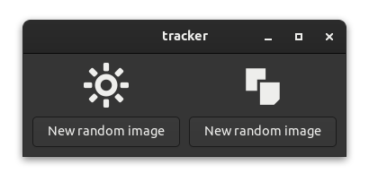
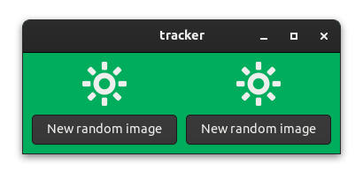

Tracker
A tracker in this context simply means a data type that’s able to track changes to itself. For example, if we increment the counter of the model we used for our first app, the model might tell us later that the counter changed during the last update function.
Relm4 does not promote any implementation of a tracker. You’re free to use any implementation you like, you can even implement a tracker yourself. In this example however, we’ll use the tracker crate that provides a simple macro that implements a tracker for us automatically.
Using this technique, we will implement a small program which displays two randomly picked icons controlled by two buttons:

When pressing a button, the icon above it will change. The background of the application will become green when the two icons are identical:

The tracker crate
The tracker::track macro implements the following methods for your struct fields:
-
get_{field_name}()
Get an immutable reference to your field. -
get_mut_{field_name}()
Get a mutable reference to your field. Assumes the field will be modified and marks it as changed. -
set_{field_name}(value)
Get a mutable reference to your field. Marks the field as changed only if the new value isn’t equal with the previous value. -
update_{field_name}(fn)
Update your mutable field with a function or a closure. Assumes the field will be modified and marks it as changed.
To check for changes you can call {struct_var_name}.changed(StructName::{field_name}()) and it will return a bool indication whether the field was updated.
To reset all previous changes, you can call {struct_var_name}.reset().
A tracker example
First we have to add the tracker library to Cargo.toml:
tracker = "0.2.2"
Now let’s have a look at a small example.
#[tracker::track]
struct Test {
x: u8,
y: u64,
}
fn main() {
let mut t = Test {
x: 0,
y: 0,
// the macro generates a new variable called
// "tracker" which stores the changes
tracker: 0,
};
t.set_x(42);
// let's check whether the change was detected
assert!(t.changed(Test::x()));
// reset t so we don't track old changes
t.reset();
t.set_x(42);
// same value, so no change
assert!(!t.changed(Test::x()));
}So in short, the tracker::track macro provides various getters and setters that will mark struct fields as changed. You also get a method that checks for changes and a method to reset the changes.
Using trackers in Relm4 apps
Let’s build a simple app that shows two random icons and allows the user to set either of them to a new random icon. As a bonus, we want to show a fancy background color if both icons are the same.
The app we will write in this chapter is also available here. Run
cargo run --example trackerfrom the example directory if you want to see the code in action.
The icons
Before selecting random icons, we need implement two functions, one for return random image name from the default GTK icon theme, and another that makes sure that when the images are updated, their names are not repeated.
const ICON_LIST: &[&str] = &[
"bookmark-new-symbolic",
"edit-copy-symbolic",
"edit-cut-symbolic",
"edit-find-symbolic",
"starred-symbolic",
"system-run-symbolic",
"emoji-objects-symbolic",
"emoji-nature-symbolic",
"display-brightness-symbolic",
];
fn random_icon_name() -> &'static str {
ICON_LIST
.iter()
.choose(&mut rand::rng())
.expect("Could not choose a random icon")
}
// Returns a random icon different from the excluded one (avoids repeats).
fn gen_unique_icon(exclude: &'static str) -> &'static str {
let mut rnd = random_icon_name();
while rnd == exclude {
rnd = random_icon_name()
}
rnd
}The model
For our model we only need to store the two icon names and whether both of them are identical.
#[tracker::track]
struct AppModel {
first_icon: &'static str,
second_icon: &'static str,
identical: bool,
}The message type is also pretty simple: we just want to update one of the icons.
#[derive(Debug)]
enum AppInput {
UpdateFirst,
UpdateSecond,
}There are a few notable things for the Component’s update implementation.
First, we call self.reset() at the top of the function body. This ensures that the tracker will be reset so we don’t track old changes.
Also, we use setters instead of assignments because we want to track these changes. Yet, you could still use the assignment operator if you want to apply changes without notifying the tracker.
The gen_unique_icon() function ensures the new icon won’t match the current one, preventing visually identical updates.
fn update(&mut self, message: Self::Input, _sender: ComponentSender<Self>) {
// reset tracker value of the model
self.reset();
match message {
AppInput::UpdateFirst => {
self.set_first_icon(gen_unique_icon(self.first_icon));
}
AppInput::UpdateSecond => {
self.set_second_icon(gen_unique_icon(self.second_icon));
}
}
self.set_identical(self.first_icon == self.second_icon);
}The view
Now we reached the interesting part of the code where we can actually make use of the tracker. Let’s have a look at the complete view! macro call:
view! {
#[root]
gtk::ApplicationWindow {
#[track = "model.changed(AppModel::identical())"]
set_class_active: ("identical", model.identical),
gtk::Box {
set_orientation: gtk::Orientation::Horizontal,
set_spacing: 10,
set_margin_all: 10,
gtk::Box {
set_orientation: gtk::Orientation::Vertical,
set_spacing: 10,
gtk::Image {
set_pixel_size: 50,
#[track = "model.changed(AppModel::first_icon())"]
set_icon_name: Some(model.first_icon),
},
gtk::Button {
set_label: "New random image",
connect_clicked[sender] => move |_| {
sender.input(AppInput::UpdateFirst)
}
}
},
append = >k::Box {
set_orientation: gtk::Orientation::Vertical,
set_spacing: 10,
gtk::Image {
set_pixel_size: 50,
#[track = "model.changed(AppModel::second_icon())"]
set_icon_name: Some(model.second_icon),
},
gtk::Button {
set_label: "New random image",
connect_clicked[sender] => move |_| {
sender.input(AppInput::UpdateSecond)
}
}
},
}
}
}The main function
In this example, we need some additional code in fn main() to add custom CSS that sets the background color for elements with class name “identical”.
Later, we just need to assign the “identical” class name to a widget to make it match the CSS selector.
fn main() {
let app = RelmApp::new("relm4.test.simple");
relm4::set_global_css(".identical { background: #00ad5c; }");
app.run::<AppModel>(());
}The #[track] attribute
The #[track] attribute is applied to method invocations in our view code. It allows us to add a condition to the update: if the condition is true, the method will be called, otherwise, it will be skipped. The attribute syntax looks like this:
#[track = "<boolean expression>"]Let’s have a look at its first appearance:
#[track = "model.changed(AppModel::identical())"]
set_class_active: ("identical", model.identical),The set_class_active method is used to either activate or disable a CSS class. It takes two parameters, the first is the class itself and the second is a boolean which specifies if the class should be added (true) or removed (false).
The value of the #[track] attribute is parsed as a boolean expression. This expression will be used as a condition to check whether something has changed. If this condition is true, the set_class_active method will be called with the parameters it guards.
The macro expansion for method calls annotated with the #[track] attribute look roughly like this:
if model.changed(AppModel::identical()) {
self.main_window.set_class_active("identical", model.identical);
}That’s all. It’s pretty simple, actually. We just use a condition that allows us to update our widgets only when needed.
The second #[track] attribute works similarly:
#[track = "model.changed(AppModel::first_icon())"]
set_icon_name: Some(model.first_icon),Using a tracker as debugging helper
Since the
#[track]attribute parses expressions, you can use the following syntax to debug your trackers:
#[track = "{ println!("Update widget"); argument }"]
Initializing the model
There’s one last thing to point out. When initializing our model, we need to initialize the tracker field as well. The initial value doesn’t really matter because we call reset() in the update function anyway, but usually 0 is used.
let model = AppModel {
first_icon: random_icon_name(),
second_icon: random_icon_name(),
identical: false,
tracker: 0,
};The complete code
Let’s look at our code again in one piece to see how all these parts work together:
use gtk::prelude::{BoxExt, ButtonExt, OrientableExt};
use rand::prelude::IteratorRandom;
use relm4::{gtk, ComponentParts, ComponentSender, RelmApp, RelmWidgetExt, SimpleComponent};
const ICON_LIST: &[&str] = &[
"bookmark-new-symbolic",
"edit-copy-symbolic",
"edit-cut-symbolic",
"edit-find-symbolic",
"starred-symbolic",
"system-run-symbolic",
"emoji-objects-symbolic",
"emoji-nature-symbolic",
"display-brightness-symbolic",
];
fn random_icon_name() -> &'static str {
ICON_LIST
.iter()
.choose(&mut rand::rng())
.expect("Could not choose a random icon")
}
// Returns a random icon different from the excluded one (avoids repeats).
fn gen_unique_icon(exclude: &'static str) -> &'static str {
let mut rnd = random_icon_name();
while rnd == exclude {
rnd = random_icon_name()
}
rnd
}
// The track proc macro allows to easily track changes to different
// fields of the model
#[tracker::track]
struct AppModel {
first_icon: &'static str,
second_icon: &'static str,
identical: bool,
}
#[derive(Debug)]
enum AppInput {
UpdateFirst,
UpdateSecond,
}
#[relm4::component]
impl SimpleComponent for AppModel {
type Init = ();
type Input = AppInput;
type Output = ();
view! {
#[root]
gtk::ApplicationWindow {
#[track = "model.changed(AppModel::identical())"]
set_class_active: ("identical", model.identical),
gtk::Box {
set_orientation: gtk::Orientation::Horizontal,
set_spacing: 10,
set_margin_all: 10,
gtk::Box {
set_orientation: gtk::Orientation::Vertical,
set_spacing: 10,
gtk::Image {
set_pixel_size: 50,
#[track = "model.changed(AppModel::first_icon())"]
set_icon_name: Some(model.first_icon),
},
gtk::Button {
set_label: "New random image",
connect_clicked[sender] => move |_| {
sender.input(AppInput::UpdateFirst)
}
}
},
append = >k::Box {
set_orientation: gtk::Orientation::Vertical,
set_spacing: 10,
gtk::Image {
set_pixel_size: 50,
#[track = "model.changed(AppModel::second_icon())"]
set_icon_name: Some(model.second_icon),
},
gtk::Button {
set_label: "New random image",
connect_clicked[sender] => move |_| {
sender.input(AppInput::UpdateSecond)
}
}
},
}
}
}
// Initialize the UI.
fn init(
_params: Self::Init,
root: Self::Root,
sender: ComponentSender<Self>,
) -> ComponentParts<Self> {
let model = AppModel {
first_icon: random_icon_name(),
second_icon: random_icon_name(),
identical: false,
tracker: 0,
};
// Insert the macro code generation here
let widgets = view_output!();
ComponentParts { model, widgets }
}
fn update(&mut self, message: Self::Input, _sender: ComponentSender<Self>) {
// reset tracker value of the model
self.reset();
match message {
AppInput::UpdateFirst => {
self.set_first_icon(gen_unique_icon(self.first_icon));
}
AppInput::UpdateSecond => {
self.set_second_icon(gen_unique_icon(self.second_icon));
}
}
self.set_identical(self.first_icon == self.second_icon);
}
}
fn main() {
let app = RelmApp::new("relm4.test.simple");
relm4::set_global_css(".identical { background: #00ad5c; }");
app.run::<AppModel>(());
}